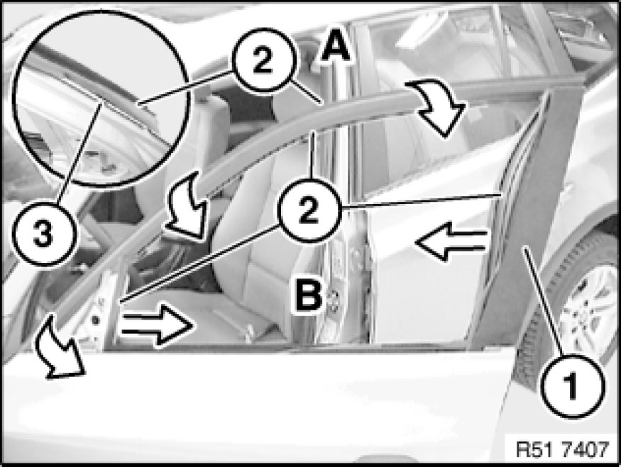
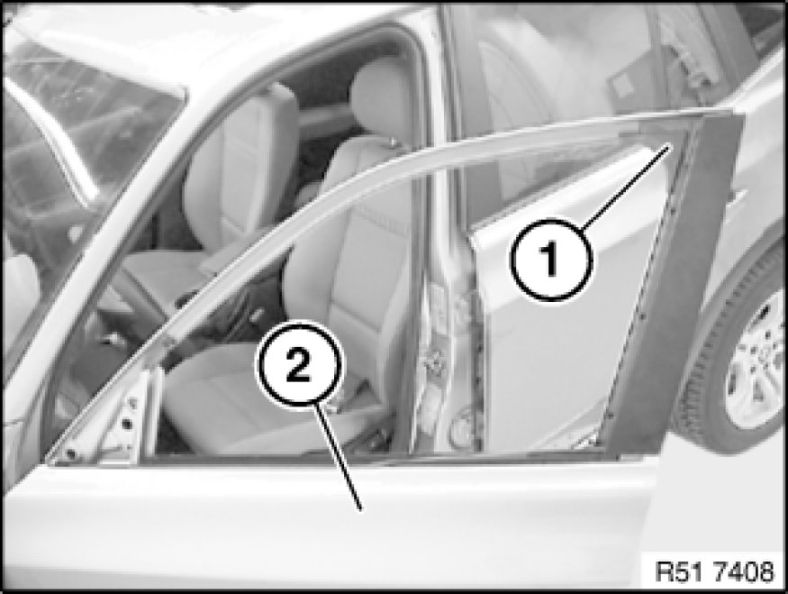
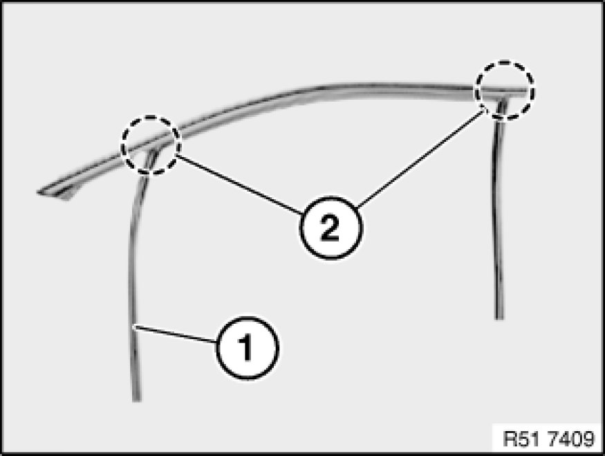

Replacing Front Left or Right Rubber Guide For Left or Right Door Window
51 32 211 - Replacing front left or right rubber guide for left or right door window

Necessary preliminary tasks:
- Remove front door window glass Service and Repair
- Remove window cavity cover strip on outside of front door Removing and Installing/Replacing Window Cavity Cover Strip on Outside of Left or Right Front Door
- Remove mirror Removing and Installing/Replacing Mirror on Left or Right Front Door
- Remove cover on inside of door window frame Removing and Installing/Replacing Housing Cover on Inner Left or Right Door Window Frame
- Partially detach trim on front door window frame

Detach trim (1).
Feed rubber guide (2) on front door
-A)
- upwards out of guide (3),
-B)
- feed out of window guide rails and remove.
Installation:
Insert rubber guide at front/bottom into window guide rail.

Installation:
Sound insulation (1) in front door (2) must be fitted and must not be damaged.

Installation:
Rubber guide (1) must not be damaged in corners (2).